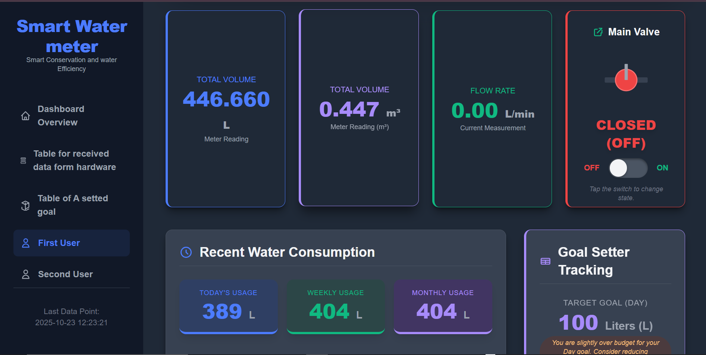

1.Project Overview(Introduction)
The Smart Water Meter Project is a comprehensive IoT solution designed and developed by a dedicated team of two.This project manage system designed to provide real-time monitoring and analysis of water consumption. This system moves beyond traditional analog meters to empower consumers and utility providers to detect leaks, monitor usage, optimize billing and promote efficient water use.
We built a project that combines hardware with a smart online platform. This helps you get personalized information and manage resources in a smarter way for the future.

Key Innovations
Go beyond basic metering with our solution, and unlock the true potential of your data and water efficiency.
Automated Leak Detection
This is a technology that uses a variety of sensors, software, and systems to continuously monitor for and identify leaks in pipelines without the need for manual inspection.Traditional water meters require manual reading, often on a monthly while Smart water meters, equipped with automated leak detection, continuously monitor water flow.
Real-Time Monitoring and Data Analytics
Provides a live view of consumption water via a mobile app and computer, This allows for the immediate visualization of water daily usage, enabling customers to understand their consumption patterns and make informed decisions.
Conservation View
Delivers personalized tips and historical data to help users understand their water footprint and reduce waste.The system keeps a record of your past consumption. This allows you to view your water usage on different timescales—hourly, daily, weekly, monthly, or even yearly.
Mult_Communication
To effectively manage water usage in a multi-unit building, smart water meters rely on a layered communication architecture, which allows many devices to send data to a single central application like smart phone and computer. Instead of each meter having its own connection to the internet, they form a local network within the building. This method is more scalable, cost-effective, and efficient.
Real-Time Controll
Smart water meter refers to the advanced capability to remotely and instantly open or close a valve on the meter using a digital command. Unlike traditional meters that require a technician to physically visit a property and manually turn a valve, a smart meter with this feature allows for immediate, on-demand management of the water supply through a mobile app or a computer dashboard.
Optimal Water Quality
The smart water meter system goes beyond simply measuring consumption. It transforms into a real-time monitoring station, providing measures of water's cloudiness, and measures the acidity or alkalinity of the water for ensuring public health, and optimizing treatment and delivery systems.
Project Purpose & Goals
The Smart Water Meter project was initiated with a clear mission to address critical challenges in water management and conservation. Our primary goals are to empower consumers with knowledge, enable utilities to operate more efficiently, and contribute to global sustainability efforts.
Foster Water Conservation
The ability to provide actionable insights and immediate feedback. By giving consumers access to their consumption data via mobile apps or web platform.
Enhance Utility Efficiency
To give utility companies a robust, real-time tool for remote monitoring, automated data collection, and proactive infrastructure management.
Minimize Water Loss
To drastically reduce unaccounted-for water loss by enabling fast and accurate detection of leaks and system faults.
Project Sketches & Concepts
Core Components
Microcontroller
Flow Sensor

Lora Module
LED

Turbidity Sensor
Temperature Sensor

solenoid Valve

Power Supply
User Interface
Project Hardware circuit
This is all the physical, tangible components that make up your device or system. Think of it as the "body" of your project.

Project Pcb board
This is the central component, acting as the "brain" of the smart water meter. It's a complex board that houses all the electronic components necessary for the meter's operation.
Project Design & Plan
This section details the final physical design of the circuit and provides a step-by-step guide for assembly and integration.
Desktop dashboard
Screenshoot
Water Valve
Lcd display
Lcd display
Full project
Data Display
Data display
Assembled Circuit
A photo of the completed circuit, demonstrating the final layout and connections.
Project Instructions
- 1. Assemble the Hardware: Connect the water flow sensor, microcontroller (ESP32), and Wi-Fi module as per the circuit diagram. Ensure all connections are secure.
- 2. Power the Device: Connect the assembled circuit to a stable 5V power supply.
- 3. Flash the Firmware: Use the provided software to upload the pre-compiled firmware to the microcontroller. This firmware handles reading data from the sensor and transmitting it.
- 4. Configure Wi-Fi: Follow the on-screen prompts to configure the device's Wi-Fi connection.
- 5. Install the Meter: Install the physical device in-line with your water pipe.
- 6. Verify Data Flow: Check the mobile application or cloud dashboard to confirm that water usage data is being received in real-time.
Documentation Work Progress
A clear timeline showing the five main steps we followed to build our project .
Step 1: Get Everything
We set up the microcontroller(ESP 32) and installed all the necessary software. We also set up the XAMPP server on the computer to be ready to store our data.
Step 2: Connection between the Sensors
We connected the Water Flow, Temperature, and Turbidity sensors. Then, we wrote the first part of the Arduino code to make sure they read the water data correctly and in real-time.
Step 3: Program and Control Parts
We wired and coded the Water Pump and Solenoid Valve. The Arduino code now includes the main logic to automatically control the water flow based on the quality readings from the sensors.
Step 4: Save and Manage Data
We developed the backend scripts using PHP. This code handles the sensor data coming from the microcontroller, saves it into a database, and stores all the current and past readings on the XAMPP server.
Step 5: Screen and Test of our project
We designed the monitoring dashboard using HTML so users can see the data easily. Finally, we linked all the parts together and did a complete test and setup (calibration) of the whole system.
Project Firmware Code
This section is dedicated to the firmware code that runs on the microcontroller. You can copy and paste your code into the block below, and add comments to explain its functionality.
#include <WiFi.h>
#include <HTTPClient.h>
#include <LCD_I2C.h>
#include <ArduinoJson.h>
const int valvePin = 23;
int tdspin=18;
int tdsdata=100;
int ThermistorPin = 34;
int Vo;
float R1 = 10000;
float logR2, R2, T;
float c1 = 1.009249522e-03, c2 = 2.378405444e-04, c3 = 2.019202697e-07;
const int sensorPin = 2;
int turbidityPin = 35;
volatile int pulseCount = 0;
float flowRate = 0.0;
unsigned long previousMillis = 0;
const unsigned long interval = 1000;
float totalLiters = 0.0;
float literm3=0.0;
const char*ssid = "Manzi";
const char*password ="dillox12";
String serverName ="http://192.168.1.80/DashBoard_for_IOT/Backend.php";
const size_t JSON_DOC_SIZE = 512;
LCD_I2C lcd(0x27, 20, 4);
void pulseCounter() {
pulseCount++;
}
void setup() {
lcd.begin();
lcd.backlight();
pinMode(18, INPUT);
pinMode(valvePin, OUTPUT);
digitalWrite(valvePin, LOW);
pinMode(sensorPin, INPUT_PULLUP);
attachInterrupt(digitalPinToInterrupt(sensorPin), pulseCounter, RISING);
Serial.begin(115200);
WiFi.begin(ssid,password);
Serial.print("connecting to wifi...");
while(WiFi.status() != WL_CONNECTED)
{
delay(500);
Serial.print(".");
}
Serial.println("\n connected to wifi");
}
void loop() {
// --- Sensor Readings & Flow Calculation (Every 1 Second) ---
unsigned long currentMillis = millis();
if (currentMillis - previousMillis >= interval) {
previousMillis = currentMillis;
float calibrationFactor = 4.5;
flowRate = (pulseCount / calibrationFactor) / (interval / 1000.0);
float volumeAdded = flowRate / 60.0;
totalLiters += volumeAdded;
literm3= totalLiters / 1000;
pulseCount = 0;
Serial.print("Flow Rate: ");
Serial.print(flowRate);
Serial.println(" L/min");
Serial.print("Total Volume: ");
Serial.print(totalLiters, 3);
Serial.println(" L");
Serial.print("Volume: ");
Serial.print(literm3, 3);
Serial.println(" m3");
lcd.setCursor(0, 0);
lcd.print("smart water meter");
lcd.setCursor(0, 1);
lcd.print("F.rate: ");
lcd.print(flowRate);
lcd.print(" L/min");
lcd.setCursor(0, 2);
lcd.print("T.Volume: ");
lcd.print(totalLiters, 3);
lcd.print(" L");
lcd.setCursor(0, 3);
lcd.print("Cubic.M: ");
lcd.print(literm3, 3);
lcd.print(" m3");
}
Vo = analogRead(ThermistorPin);
R2 = R1 * (4095.0 / (float)Vo - 1.0);
logR2 = log(R2);
T = (1.0 / (c1 + c2*logR2 + c3*logR2*logR2*logR2));
T = T - 273.15;
int turbidityValue = analogRead(turbidityPin);
int Turbidity=map(turbidityValue,0,4096,0,10);
Serial.print("Temperature: "); Serial.print(T); Serial.println(" *c");
Serial.print("Turbidity: "); Serial.print(Turbidity); Serial.println(" NTU");
Serial.print("TDS: "); Serial.println(tdsdata);
if(isnan(flowRate) || isnan(totalLiters) || isnan(Turbidity) || isnan(T) || isnan(tdsdata))
{
Serial.println("Failed to read from sensor!");
}
else
{
sendToServer(flowRate, totalLiters, Turbidity, T, tdsdata);
}
delay(10000);
}
void sendToServer(float flowRate,float totalLiters,float Turbidity,float T,float tdsdata)
{
if(WiFi.status() == WL_CONNECTED)
{
HTTPClient http;
http.begin(serverName);
http.addHeader("content-Type","application/json");
// Construct the JSON payload to send SENSOR data to the server
String jsonData = "{"
"\"flow_rate\": " + String(flowRate, 2) + "," +
"\"total_volume\": " + String(totalLiters, 2) + "," +
"\"turbidity_value\": " + String(Turbidity, 2) + "," +
"\"temperature\": " + String(T, 2) + "," +
"\"tds_value\": " + String(tdsdata, 2) +
"}";
int httpResponseCode = http.POST(jsonData);
if(httpResponseCode > 0)
{
String response = http.getString();
Serial.print("Server Response Code: ");
Serial.println(httpResponseCode);
Serial.print("Raw Server Response Body: ");
Serial.println(response);
StaticJsonDocument<JSON_DOC_SIZE> doc;
DeserializationError error = deserializeJson(doc, response);
if (error) {
Serial.print("JSON Response Parsing failed: ");
Serial.println(error.c_str());
} else {
const char* valveStatus = doc["valve_status"];
if (valveStatus) {
if (strcmp(valveStatus, "ON") == 0) {
digitalWrite(valvePin, HIGH);
Serial.println("Server set valve to ON.");
} else if (strcmp(valveStatus, "OFF") == 0) {
digitalWrite(valvePin, LOW);
Serial.println("Server set valve to OFF.");
} else {
Serial.print(" Unknown status received: ");
Serial.println(valveStatus);
}
} else {
Serial.println("'valve_status' key missing in server response.");
}
}
}
else
{
Serial.printf("HTTP POST failed, code: %d\n", httpResponseCode);
}
http.end();
}
else
{
Serial.println("Wifi Disconnected");
}
}
System Architecture
This is the Smart water meter full system blocks Diagram
Main Block Diagram

Main Block Diagram

Sub Block diagram

Smart Water Meter User Interface
The user interface provides a clear and intuitive way to monitor and manage water consumption. The dashboard is designed to deliver key insights at a glance, empowering users to make informed decisions.
Desktop Dashboard
A comprehensive overview of real-time usage, historical data, and leak alerts, accessible from any web browser.
Mobile App View
Manage your water on the go with our mobile-optimized interface, featuring quick alerts and usage controls.
Final Project Video
Watch the Smart Water Meter in action! This video demonstrates the physical prototype, the real-time data flow, and a full showcase of the user interface functionality.